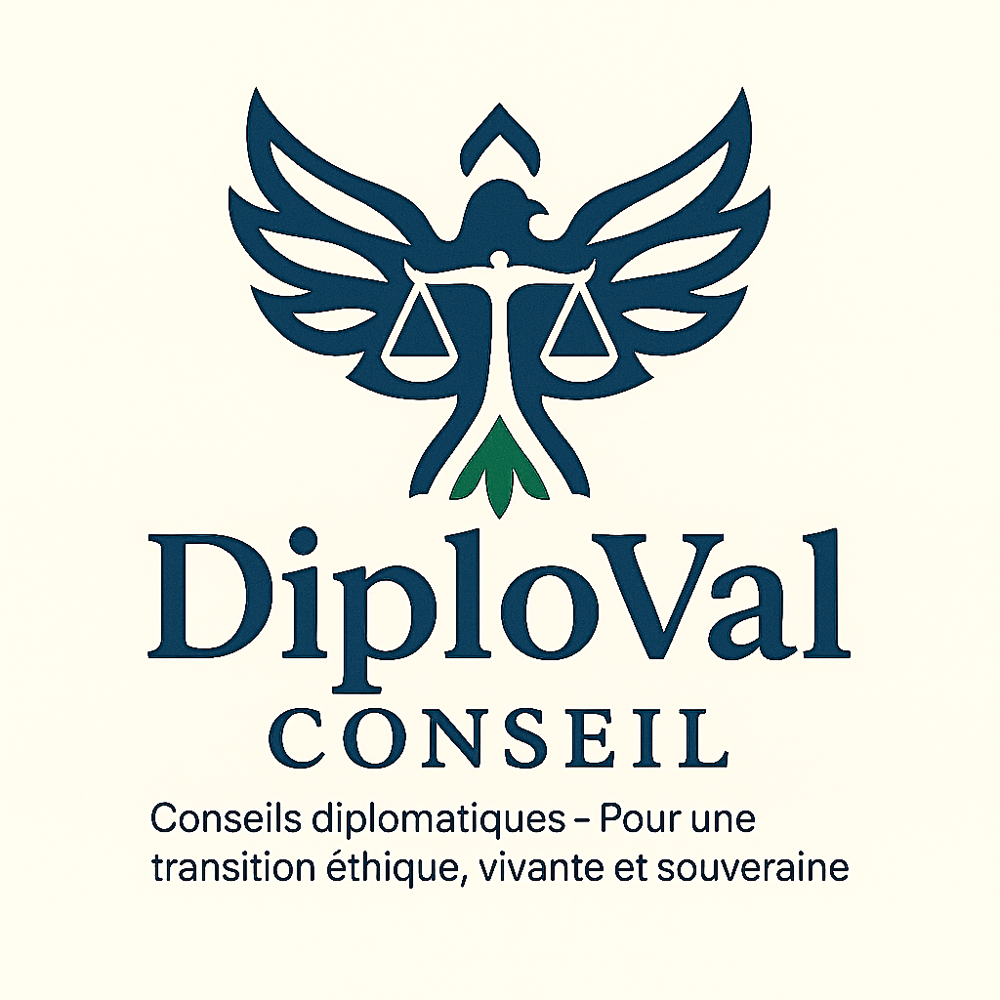

Diploval Conseil Préparation de l'espace diplomatique…

Diploval ConseilConseils diplomatiques – Transition éthique, vivante et souveraine
Diplomatie éthique au service du vivant
Diploval Conseil est un cabinet indépendant, fondé et porté par une seule personne,
dédié à la diplomatie de transition, à l'analyse géopolitique et à la défense du vivant.
Ce qu'est Diploval
Un espace de réflexion et d'action qui relie diplomatie, territoires et justice vivante.
Pourquoi Diploval
Donner aux élus, citoyens, collectifs et médias des outils d'analyse, de médiation et
de décision qui respectent le vivant et la souveraineté des peuples.
Un cabinet, un réseau
Statut actuel : auto-entreprise. Ressources : un réseau d'experts, de chercheurs,
de juristes et de citoyens engagés, mobilisables selon les dossiers.
Mémorandums et analyses diplomatiques
Une partie du travail de Diploval se traduit par des mémorandums structurés,
des notes confidentielles ou des synthèses publiques destinées aux élus,
institutions, collectifs citoyens et médias.
Conflits et sécurité
Stratégies de désescalade et neutralité active
Exemples de mémorandums sur la sortie de crise par la neutralité concertée,
la souveraineté des peuples et la limitation des engrenages militaires.
Climat et environnement
Eau, climat, COP et justice du vivant
Dossiers sur la gouvernance de l'eau, les COP, les liens entre intérêts privés,
politiques climatiques et droits fondamentaux des populations.
Territoires
Accompagnement diplomatique des communes
Mémorandums pour les maires et équipes municipales : redynamisation territoriale,
souveraineté locale, économie régénératrice, consultation citoyenne.
Diplomag – La revue stratégique de Diploval
Diplomag est l'espace éditorial où se croisent analyses géopolitiques, enquêtes,
décryptages et mises en perspective. Les articles peuvent être explorés par régions
du monde et par thématiques.
Zones géographiques
Thématiques
France · Écologie
Entre sécheresses et concessions privées : qui gouverne vraiment l'eau ?
Une analyse des conflits d'usage autour de l'eau, des arbitrages politiques et des
conséquences sur les territoires et leurs habitants.
Europe · Géopolitique
Confrontation, alliances et sécurité : repenser les lignes rouges
Comment éviter l'escalade militaire tout en protégeant les populations et la
souveraineté des États au sein d'alliances déjà sous tension.
Monde · Santé
Pandémies, traités mondiaux et souveraineté sanitaire
Décodage des traités globaux sur les pandémies, de leurs enjeux démocratiques
et des questions de responsabilité qui en découlent.
Agenda Diploval
Interventions, publications, ateliers, rencontres territoriales : l'agenda permet de suivre
les temps forts de Diploval Conseil.
Automne 2025
Lancement officiel du site Diploval Conseil
Présentation des mémorandums, ouverture de Diplomag et premières publications structurées.
Hiver 2025–2026
Série de mémorandums territoriaux
Travaux avec des communes pilotes sur la souveraineté locale, la protection de l'eau et l'économie régénératrice.
2026
Déploiement des outils citoyens
Consultations citoyennes, initiatives constituantes et accompagnement des territoires dans leurs transitions.
Charte Diploval et ligne éditoriale de Diplomag
La charte fixe les engagements éthiques et méthodologiques de Diploval Conseil,
ainsi que la ligne éditoriale de Diplomag.
Diploval agit sans lien d'allégeance à des partis politiques, à des groupes d'intérêts
économiques ou à des lobbys. Les analyses visent à éclairer, pas à enrôler.
La dignité humaine, les droits du vivant et la préservation des communs (eau, sol, climat)
sont des repères constants dans les mémorandums, les dossiers et les articles.
Les contenus s'appuient sur des sources vérifiables. Les incertitudes, hypothèses ou zones
de débat sont signalées, pour laisser de la place au doute et à la nuance.
Certains travaux de Diploval sont publics, d'autres restent confidentiels. Les communes,
personnes ou collectifs accompagnés peuvent garder l'anonymat lorsque la sensibilité des
dossiers l'exige.
Dossiers en cours
Présentation synthétique de quelques dossiers actuellement accompagnés, sans jamais exposer
ni fragiliser les acteurs concernés.
Services et accompagnements
Diploval Conseil propose des interventions sur mesure, adaptées à la sensibilité de chaque dossier
et à la réalité des territoires.
Analyses diplomatiques et mémorandums
Rédaction de mémorandums structurés, notes stratégiques et analyses d'impact pour élus,
associations, collectifs citoyens, journalistes ou acteurs institutionnels.
Accompagnement des communes et territoires
Diagnostics complets, ateliers participatifs, propositions de scénarios, trames de
concertation citoyenne et outils pour la transition vivante.
Enquêtes et dossiers sensibles
Travail d'analyse sur les sujets complexes : eau, climat, santé, conflits, gouvernance
mondiale, avec une articulation entre droit, diplomatie et terrain.
Formats éditoriaux et médiation
Conception de séries éditoriales (Diplomag), interventions, conférences, contenus pédagogiques
et supports pour les médias ou collectifs.
Rester informé
Recevoir, à un rythme raisonnable, les analyses publiques, mémorandums ouverts et temps forts de l'agenda Diploval.
Contact
Pour un dossier, une demande d'intervention, une collaboration éditoriale ou une prise de contact,
vous pouvez utiliser les coordonnées ci-dessous ou le formulaire sécurisé.
Localisation : Chambonas (07140), Ardèche – France
En envoyant un message, vous acceptez que vos informations soient traitées uniquement
pour répondre à votre demande, conformément à la politique de confidentialité.
Formulaire de contact
RGPD et protection des données
Diploval Conseil respecte le Règlement Général sur la Protection des Données (RGPD).
Les informations transmises via ce site ne sont utilisées qu'aux fins de prise de contact et ne sont jamais revendues.
Données collectées : uniquement les informations que vous envoyez volontairement (nom, email, contenu du message).
Durée de conservation : maximum 12 mois pour les demandes simples ; plus longtemps uniquement dans le cadre d’un dossier en cours, sur accord explicite.
Vos droits : accès, rectification, suppression. Pour exercer vos droits, contactez :
contact@diplovalconseil.fr.
Cookies : le site ne dépose aucun cookie de suivi ou publicitaire.
Ce qu'est Diploval
Diploval Conseil est un cabinet indépendant de diplomatie de transition. Il agit à la croisée de
plusieurs mondes : institutions, communes, société civile, chercheurs, citoyens. L'objectif n'est
pas de brandir des réponses toutes faites, mais d'apporter des grilles de lecture, des scénarios
et des chemins de réconciliation possibles.
Pourquoi Diploval
Parce que les crises actuelles exigent autre chose que des réactions à chaud ou des logiques de blocs.
Diploval s'attache à comprendre les causes profondes, à identifier les lignes de fracture et à proposer
des pistes qui respectent à la fois la dignité humaine, le vivant et la souveraineté des peuples.
Un cabinet, un réseau
Derrière Diploval, il y a aujourd'hui une personne, mais aussi un réseau de confiance, construit au fil
des années : juristes, chercheurs, professionnels de terrain, représentants de territoires et citoyens
engagés. Selon les dossiers, ces ressources peuvent être sollicitées pour renforcer un travail ou un
avis.
Cette rubrique pourra accueillir des mémorandums déjà publiés ou des extraits adaptés à la diffusion
publique. Vous pourrez y déposer vos documents sous forme de PDF, de synthèses ou d'articles.
Mémorandums sur l'eau, le climat et l'environnement
Ici pourront figurer les dossiers liés à la gouvernance de l'eau, aux conflits d'usage, aux
négociations climatiques et aux arbitrages politiques qui en découlent.
Cette rubrique pourra détailler vos accompagnements de communes, vos diagnostics, vos notes adressées
aux maires et élus, ainsi que les propositions de trajectoires de transition.
Entre sécheresses et concessions privées : qui gouverne vraiment l'eau ?
Vous pourrez ici intégrer l'article complet, avec vos analyses, graphiques, schémas ou liens vers des
sources officielles. Ce texte n'est pour l'instant qu'un exemple de structure.
Confrontation, alliances et sécurité : repenser les lignes rouges
Exemple d'article sur les traités mondiaux sur les pandémies, les enjeux de souveraineté et
les impacts sur les droits fondamentaux.
Dossier de commune – Redynamisation territoriale
Ce panneau pourra détailler le type de travail réalisé (diagnostic, ateliers, mémorandums), sans
jamais citer le nom de la commune ni d'éléments permettant de l'identifier directement.
Dossier thématique – Eau, industries et santé publique
Ici pourront être présentés les axes d'analyse (juridique, environnemental, sanitaire, économique),
ainsi que vos propositions ou pistes de réflexion.
Un mot avant de partir ?
Quelques questions anonymes pour mieux comprendre qui lit Diploval Conseil.
Sondage rapide (optionnel)
Toutes les réponses sont anonymes. Elles servent uniquement à comprendre qui consulte Diploval Conseil
et à adapter les contenus.
Ce site utilise uniquement des cookies techniques essentiels à son bon fonctionnement.
Aucun cookie publicitaire ou de suivi n'est déposé.